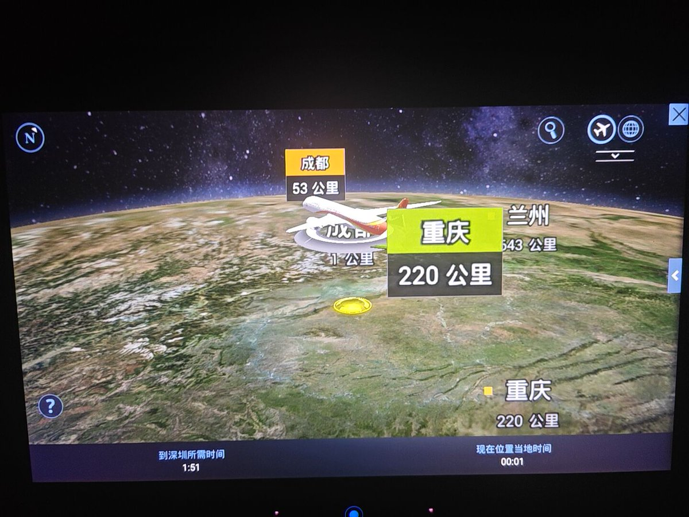
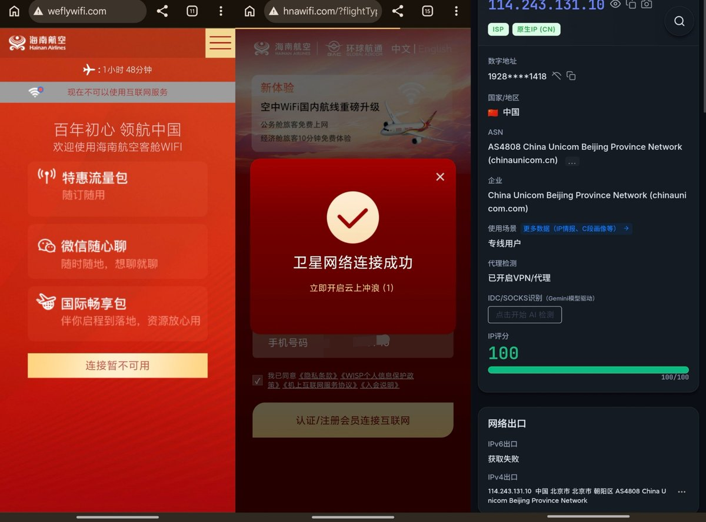
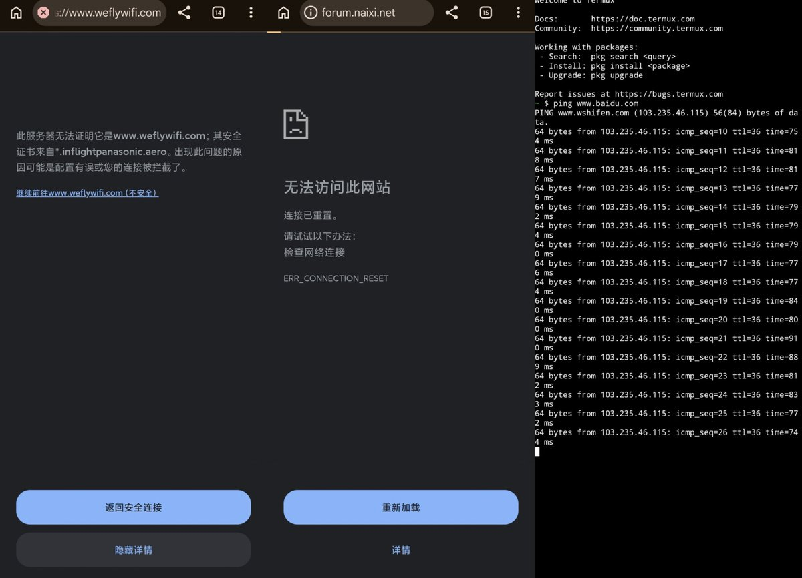

奶昔🥤
@realNyarime
试了下海航的B789，上面的娱乐系统是Android方案，经典的松下Voyager 3D，倒是有更新飞行数据
机上的网络对支付宝和微信开白名单，能ping、dns解析正常，可考虑DNS或ICMP隧道。用的是中国联通的卫星，不是中国卫通（电信）的空地互联，出口为北京联通带墙需要挂梯子，延迟也是700-800ms波动
不过CNIP也能评分100也是活久见，被判定为专线、VPN代理，速度大概是5Mbps左右反正Speedtest跑不动，不过在天上能上网就不错了哈哈


